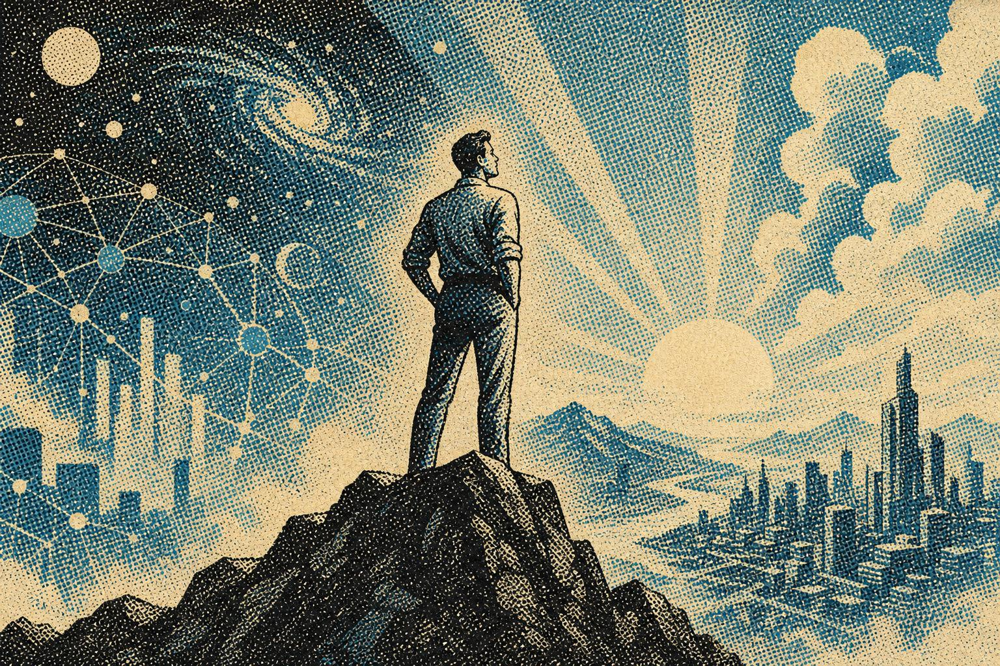

AI for Science expands to foundations and institutions
Anthropic is expanding its AI for Science program and highlights 20 scientific foundations, institutions and research groups from around the world that it has partnered with. The feed summary names the count but not the partners, the form of support (credits, model access or funding) or the fields covered, so those are not described here. It is the only Anthropic post today and leads because it is the one official update about putting models to work on research rather than about distribution.
OpenAI and ServiceNow expand partnership across enterprise workflows
OpenAI and ServiceNow are expanding their partnership in both directions: OpenAI models and agents go into ServiceNow, and ServiceNow workflows become available inside ChatGPT and Codex. The feed does not give timing, pricing or which workflows come first. It is the third enterprise distribution deal in three days after Anthropic’s GSA expansion and OpenAI’s Oracle expansion; both labs are now selling through the software vendors that already sit in large companies.
The future of the firm
An OpenAI essay on how AI might enter the org chart “beneath, beside, and between us”, by the feed’s one-line summary: as a layer under employees, as a peer, and as the connective tissue between teams. A rare non-product, non-customer post from OpenAI; the author and the argument’s specifics were not fetched, so they are not described here.
Legora is building the agentic operating system for legal work
Customer story, carried over from yesterday under a shortened URL: legal-tech company Legora uses OpenAI models, ChatGPT and Codex to accelerate legal workflows, expand contract analysis and free lawyers for higher-value work. “Agentic operating system” is Legora’s framing; the feed gives no usage numbers.
Every Model Has a Six-month Shelf Life Now
Every’s Context Window newsletter argues that every frontier model now has a six-month shelf life before the next release makes it obsolete. The same issue, per the preview, covers “the shoggoth strategy for generalists”, moving a website off Webflow with Claude, and what the Every team could not stop talking about this week. Only the preview was fetched, so the argument itself is not described here. The first fresh independent article in three days.
Turning America’s AI Lead into Industrial Power
The Special Competitive Studies Project (SCSP) shares takeaways from its AI+ Robotics Summit on turning the United States’ AI lead into industrial power. Only the one-line summary was fetched, so the specific takeaways are not described here. It rhymes with today’s a16z and Sequoia videos on factories, mines and energy: the AI-and-physical-industry theme is showing up across the pool.

$100M ARR Founder: The Next Big AI Opportunity
Greg Isenberg talks with a founder whose company has reached $100 million in annual recurring revenue about what they see as the next big AI opportunity. Uploaded early this morning Beijing time; described from the title only, so the guest and the opportunity are not described here. Today’s hero: a fresh, on-topic upload from a channel Charlotte follows.
Mark Cuban on Why AI Could Turn Solo Founders Into Trillionaires
a16z’s Mark Cuban interview, carried over from yesterday under a new title: it was “Mark Cuban’s Plan to Make Healthcare Affordable” and is now about why AI could turn solo founders into trillionaires. The retitle moves it squarely on-topic. Described from the title only.
Crusoe CEO Chase Lochmiller: Turning Stranded Energy Into Intelligence
Sequoia Capital talks with Crusoe CEO Chase Lochmiller about turning stranded energy into intelligence, meaning AI compute sited where power is cheap or otherwise wasted. Uploaded this evening Beijing time; described from the title only.
Why Founders Are Betting Big on Factories, Mines, and Energy
a16z on why founders are betting big on factories, mines and energy. Uploaded tonight Beijing time; whether AI is the driver is not stated in the title, so it is not described here. Pairs with the Crusoe interview and SCSP’s industrial-power piece above.
Your cold email isn’t a sales pitch
A Lenny’s Podcast short arguing that a cold email is not a sales pitch. Uploaded early this morning Beijing time; a founder-sales item rather than an AI one, described from the title only.
The Design Partner Trap
A Lenny’s Podcast short on the “design partner trap”, the startup pattern of building for a few early customers so closely that the product never generalizes. Carried over from yesterday; described from the title only.
Does your product need to be 10x better?
A Lenny’s Podcast short asking whether a product really needs to be 10x better than the incumbent. Carried over from yesterday; described from the title only.
What happens when you’re a serial entrepreneur
An a16z short on what happens when you are a serial entrepreneur. Uploaded this morning Beijing time; a general founder item, not AI-specific, described from the title only.
European Defense Sovereignty Starts in the Factory: Stark’s Uwe Horstmann and Johannes Schaback
Sequoia Capital talks with Stark’s Uwe Horstmann and Johannes Schaback about European defense sovereignty starting in the factory. Carried over from yesterday; a defense-manufacturing item rather than an AI one, described from the title only.
Anthropic 的 AI for Science 计划扩展到基金会与科研机构
Anthropic 扩大其 AI for Science 计划，列出了来自世界各地的 20 家科学基金会、研究机构和研究团队作为合作伙伴。RSS 摘要只给出数量，未说明具体合作方、支持形式（额度、模型访问还是资金）以及覆盖的学科，故不在此描述。这是今日唯一的 Anthropic 帖子，置顶是因为它是唯一一条关于把模型用于科研、而非关于分发渠道的官方动态。
OpenAI 与 ServiceNow 扩大合作，覆盖企业工作流
OpenAI 与 ServiceNow 双向扩大合作：OpenAI 模型和智能体进入 ServiceNow，ServiceNow 的工作流则进入 ChatGPT 和 Codex。RSS 未给出时间表、定价和先上线哪些工作流。这是三天内第三笔企业分发协议，此前有 Anthropic 扩大与 GSA 的合作、OpenAI 扩大与 Oracle 的合作；两家实验室都在借助已经驻扎在大企业里的软件厂商卖产品。
企业的未来
OpenAI 的一篇随笔，按 RSS 的一句话摘要，探讨 AI 如何进入组织架构图：“在我们之下、之旁、之间”，即作为员工之下的一层、作为同事、作为团队之间的连接组织。这是 OpenAI 少见的既非产品也非客户案例的帖子；作者和论述细节未抓取到，故不在此描述。
Legora 正在打造法律工作的智能体操作系统
客户案例，昨日已收录，今日 URL 改短后再次出现：法律科技公司 Legora 用 OpenAI 模型、ChatGPT 和 Codex 加速法律工作流、扩大合同分析范围，让律师腾出精力做更高价值的工作。“智能体操作系统”是 Legora 自己的说法；RSS 未给出使用数据。
现在每个模型的保质期只有六个月
Every 的 Context Window 通讯提出，现在每个前沿模型的保质期只有六个月，下一次发布就会让它过时。据预览，同期还谈到“通才的修格斯策略”、用 Claude 把网站从 Webflow 迁走，以及 Every 团队本周反复讨论的话题。抓取仅含预览文字，论证本身不在此描述。这是三天来第一篇新出现的独立文章。
把美国的 AI 领先转化为工业实力
特别竞争研究项目（SCSP）分享其 AI+ 机器人峰会的要点，主题是把美国的 AI 领先转化为工业实力。抓取仅含一句话摘要，具体要点不在此描述。它与今日 a16z 和 Sequoia 关于工厂、矿山和能源的视频互相呼应：AI 与实体工业的主题正同时出现在多个源里。
1 亿美元 ARR 创始人：下一个 AI 大机会
Greg Isenberg 对谈一位公司年经常性收入达 1 亿美元的创始人，聊他眼中下一个 AI 大机会。北京时间今日凌晨上传；仅依据标题描述，嘉宾是谁、机会是什么不在此描述。今日头条：来自 Charlotte 关注频道的新鲜、切题的上传。
Mark Cuban：为什么 AI 可能让单人创始人成为万亿富翁
a16z 的 Mark Cuban 访谈，昨日已收录，今日改了标题：原为“Mark Cuban 让医疗变得可负担的计划”，现为“为什么 AI 可能让单人创始人成为万亿富翁”。改题后完全切题。仅依据标题描述。
Crusoe CEO Chase Lochmiller：把搁浅能源转化为智能
Sequoia Capital 对谈 Crusoe CEO Chase Lochmiller，谈把“搁浅能源”转化为智能，即把 AI 算力建在电力廉价或本会被浪费的地方。北京时间今晚上传；仅依据标题描述。
为什么创始人在重注工厂、矿山和能源
a16z 讲为什么创始人在重注工厂、矿山和能源。北京时间今晚上传；标题未说明 AI 是否是驱动因素，故不在此描述。可与上方 Crusoe 访谈和 SCSP 的工业实力文章对照。
设计合作伙伴陷阱
Lenny’s Podcast 短视频，讲“设计合作伙伴陷阱”：创业公司为少数早期客户贴身定制，结果产品始终无法通用。昨日续收；仅依据标题描述。
欧洲国防自主从工厂开始：Stark 的 Uwe Horstmann 与 Johannes Schaback
Sequoia Capital 对谈 Stark 的 Uwe Horstmann 和 Johannes Schaback，谈欧洲国防自主要从工厂做起。昨日续收；属国防制造而非 AI 内容，仅依据标题描述。